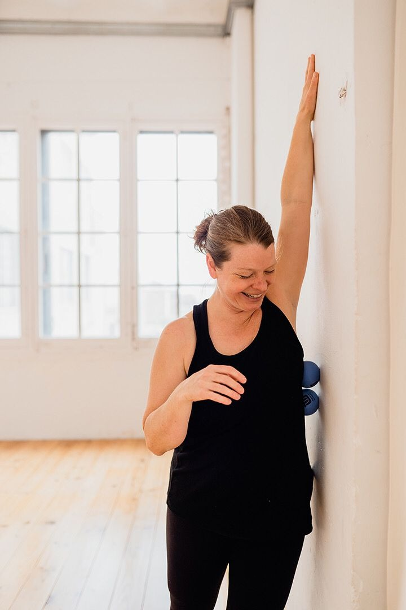
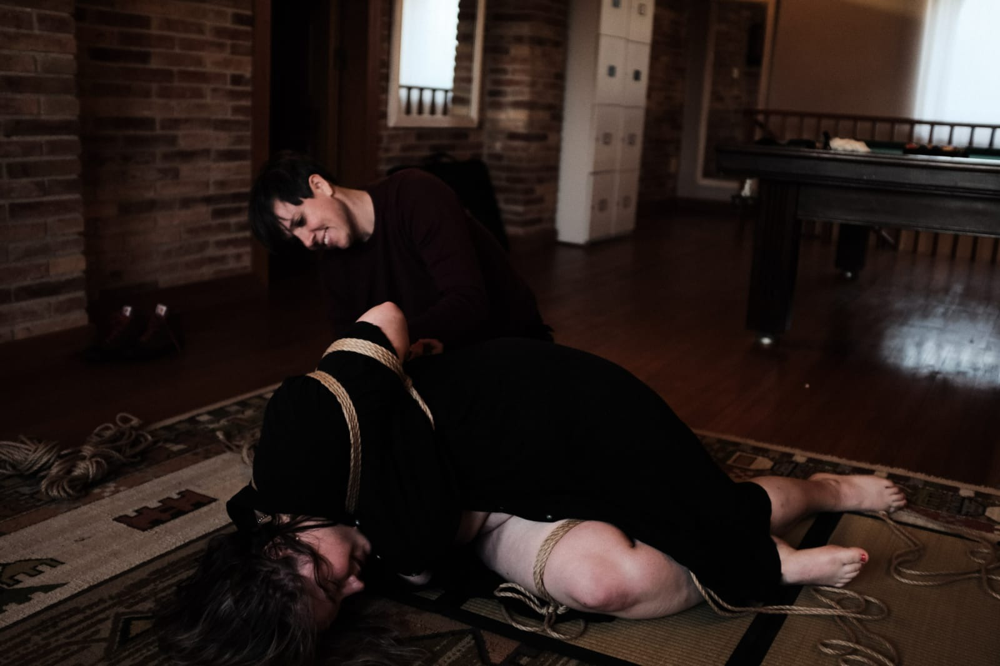

Shibari Retreat: What to expect:
Get to know the workshop leaders:

Get to know Lezanne:
Lezanne Swart is a certified Roll Model Method instructor, teaching self-myofascial release using Yoga Tune Up therapy balls.
She has over 15 years of teaching experience as a yoga instructor and has been incorporating ball rolling into her classes for the last 8 years, as well as leading workshops focused exclusively on ball rolling.
The workshop and benefits of rolling:
The workshop is taught in a relaxed and fun atmosphere, with an emphasis on creating a safe space supporting learning and exploration for each participant.
Benefits of self-massage using therapy balls:
Self-myofascial release can help you warm up for movement practices, aid in alleviating tension, and be used as an after-care practice. It’s also helpful in becoming more present in your own experience and can also be instrumental in feeling safe in your own body.
Get to know Chloé:
There are thousands of self help books and therapists out there to tell you how to get what you need and want out of sex and relationships. But when their heteronormative, vanilla, ableist, monogamous, gender binary and/or neurotypical messages are all pointing you in the wrong direction (and giving you eye strain as you roll your eyes yet again), they’re unlikely to help.
After many years of working too hard in an international career, I found healing in somatic therapy. I’m a neurodivergent relationship anarchist who connects deeply with issues around sexual trauma and the healing power of reconnecting with our bodies, our sexuality and our own pleasure.

As a Somatica sex and relationship coach and somatic sexologist, I’m endlessly fascinated by the connection between mind, body and pleasure and the ways our society has repressed that. I am also certified in Integrative Somatic Trauma Therapy and Polyvagal Yoga for Trauma Healing. With several years of experience as both a rope bottom and rigger, and many years of other BDSM practices, I love to share and help people explore in a safe(r) container.
I use experiential somatic (body-based) practices to help you figure out your desires, boundaries, needs, kinks, identity and relationship styles and how to communicate them. We can work through talk, breath work, movement, play, and real relationship practice to give you the tools you need to design your adventure in pleasure, passion and partnership in a way that meets who you are authentically and without judgment. No escalators required.
The workshops:
Workshop 1: Somatic Consent and Connection
This short workshop will explore how we can somatically feel into consent and improve connection and intention in our scenes. Many people talk about connection being important, but what does it really mean? How do we foster it and use our own embodiment and desire to connect with a partner? We´ll use somatic practices to get in touch with the body and learn how to use them to create deeper, more authentic connection.
Workshop 2: Relationship Repair
This short workshop will focus on repairing relationships after boundary crossings or other conflicts. This is one of the most important skills you can learn to help have connected long-term relationships that don’t fall apart at the first sign (or millionth sign) of conflict. We’ll practice understanding and feeling our triggers, calming our nervous systems, learn the steps of repair, and put them into real practice.
Sign up:
To pre – sign up for the retreat and for Monster to do propper vettting, please fill out this form.